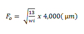

Fator de Alimentação com Tamanho Excessivo.
O tamanho ótimo de alimentação para moinhos de bolas e de barras é estabelecido pelo tamanho de alimentação que a carga mais eficientemente distribuída possa moer.
Um moinho alimentado com tamanhos maiores requer corpos moedores maiores, resultando numa maior dispersão dos tamanhos desses corpos moedores, o que reduz a eficiência da ação de moagem.
O tamanho máximo ótimo de alimentação é também função do "work index" do minério.
O tamanho máximo ótimo de alimentação correspondente a 80% passante e é dado pelas seguintes equações:
Para moinhos de barras:

Para moinhos de bolas:

O fator EF4 é calculado pela fómula: